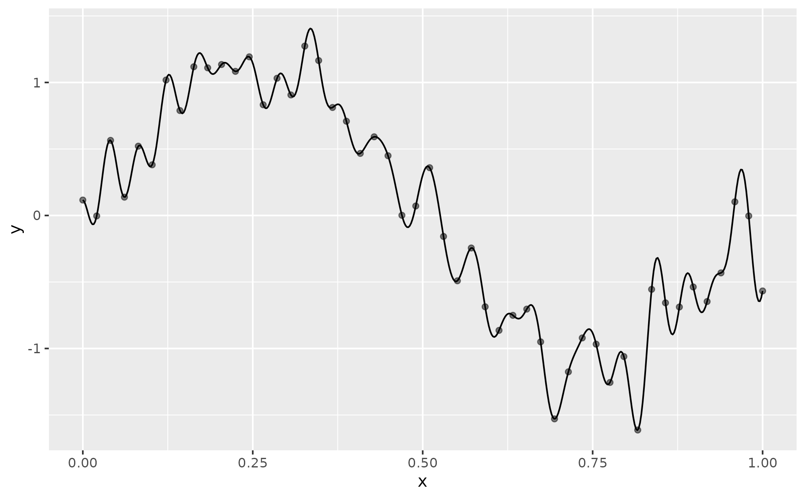
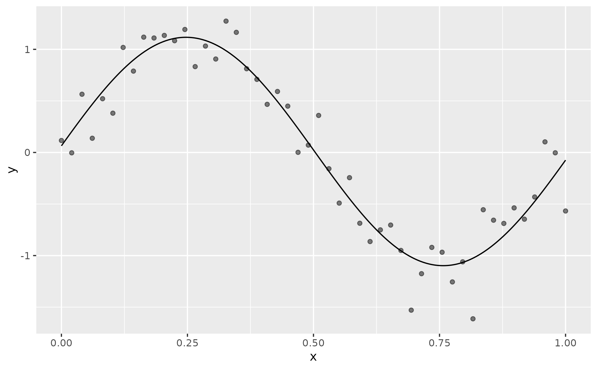
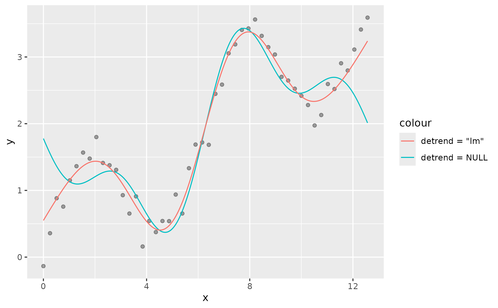
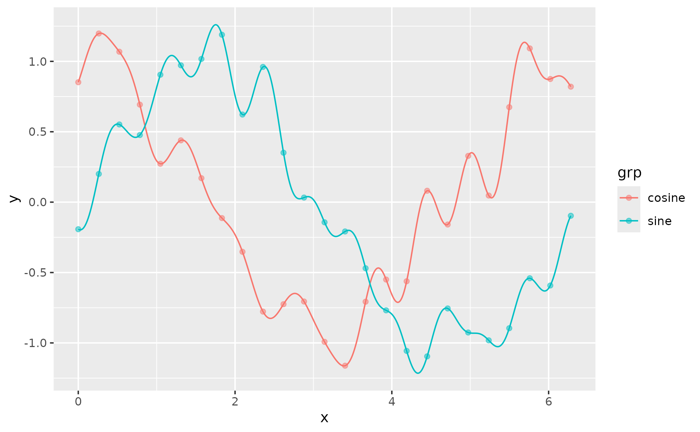
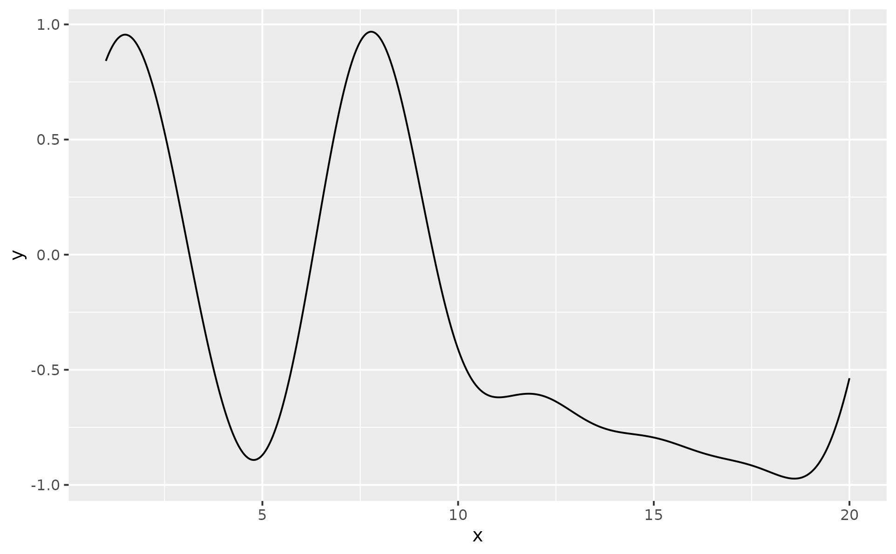

geom_fourier() and stat_fourier() fit a truncated Fourier (discrete
Fourier transform, DFT) series to the supplied x/y observations and render
the reconstructed smooth curve. The data are first aggregated at duplicate
x positions, interpolated to a uniform grid, optionally de-trended,
transformed via stats::fft(), and then reconstructed from the requested
number of harmonics.
Usage
geom_fourier(
mapping = NULL,
data = NULL,
stat = "fourier",
position = "identity",
...,
n_harmonics = NULL,
detrend = NULL,
arrow = NULL,
arrow.fill = NULL,
lineend = "butt",
linejoin = "round",
linemitre = 10,
na.rm = FALSE,
show.legend = NA,
inherit.aes = TRUE
)
stat_fourier(
mapping = NULL,
data = NULL,
geom = "line",
position = "identity",
...,
n_harmonics = NULL,
detrend = NULL,
na.rm = FALSE,
show.legend = NA,
inherit.aes = TRUE
)Arguments
- mapping
Set of aesthetic mappings created by
aes(). If specified andinherit.aes = TRUE(the default), it is combined with the default mapping at the top level of the plot. You must supplymappingif there is no plot mapping.- data
The data to be displayed in this layer. There are three options:
If
NULL, the default, the data is inherited from the plot data as specified in the call toggplot().A
data.frame, or other object, will override the plot data. All objects will be fortified to produce a data frame. Seefortify()for which variables will be created.A
functionwill be called with a single argument, the plot data. The return value must be adata.frame, and will be used as the layer data. Afunctioncan be created from aformula(e.g.~ head(.x, 10)).- position
A position adjustment to use on the data for this layer. This can be used in various ways, including to prevent overplotting and improving the display. The
positionargument accepts the following:The result of calling a position function, such as
position_jitter(). This method allows for passing extra arguments to the position.A string naming the position adjustment. To give the position as a string, strip the function name of the
position_prefix. For example, to useposition_jitter(), give the position as"jitter".For more information and other ways to specify the position, see the layer position documentation.
- ...
Other arguments passed on to
layer()'sparamsargument. These arguments broadly fall into one of 4 categories below. Notably, further arguments to thepositionargument, or aesthetics that are required can not be passed through.... Unknown arguments that are not part of the 4 categories below are ignored.Static aesthetics that are not mapped to a scale, but are at a fixed value and apply to the layer as a whole. For example,
colour = "red"orlinewidth = 3. The geom's documentation has an Aesthetics section that lists the available options. The 'required' aesthetics cannot be passed on to theparams. Please note that while passing unmapped aesthetics as vectors is technically possible, the order and required length is not guaranteed to be parallel to the input data.When constructing a layer using a
stat_*()function, the...argument can be used to pass on parameters to thegeompart of the layer. An example of this isstat_density(geom = "area", outline.type = "both"). The geom's documentation lists which parameters it can accept.Inversely, when constructing a layer using a
geom_*()function, the...argument can be used to pass on parameters to thestatpart of the layer. An example of this isgeom_area(stat = "density", adjust = 0.5). The stat's documentation lists which parameters it can accept.The
key_glyphargument oflayer()may also be passed on through.... This can be one of the functions described as key glyphs, to change the display of the layer in the legend.
- n_harmonics
Integer or NULL. Number of Fourier harmonics to retain. NULL (default) uses all harmonics up to the Nyquist limit, giving an interpolating fit. Smaller values produce smoother curves.
- detrend
Character string or
NULL. De-trending method applied before the FFT; one of"lm","loess", orNULL(default). See the Detrending section for details.- arrow
Arrow specification, as created by
grid::arrow().- arrow.fill
fill colour to use for the arrow head (if closed).
NULLmeans usecolouraesthetic.- lineend
Line end style (round, butt, square).
- linejoin
Line join style (round, mitre, bevel).
- linemitre
Line mitre limit (number greater than 1).
- na.rm
If
FALSE, the default, missing values are removed with a warning. IfTRUE, missing values are silently removed.- show.legend
logical. Should this layer be included in the legends?
NA, the default, includes if any aesthetics are mapped.FALSEnever includes, andTRUEalways includes. It can also be a named logical vector to finely select the aesthetics to display. To include legend keys for all levels, even when no data exists, useTRUE. IfNA, all levels are shown in legend, but unobserved levels are omitted.- inherit.aes
If
FALSE, overrides the default aesthetics, rather than combining with them. This is most useful for helper functions that define both data and aesthetics and shouldn't inherit behaviour from the default plot specification, e.g.annotation_borders().- geom, stat
Override the default connection between
geom_fourier()andstat_fourier().
Value
A ggplot2::layer() object that can be added to a ggplot2::ggplot().
Period convention
The DFT treats the input as one period of an infinitely repeating signal.
The correct period for \(N\) uniformly-spaced samples with spacing
\(\Delta x\) is \(P = N \cdot \Delta x\), not \(x_{max} -
x_{min}\). Using the latter (a closed interval) implicitly maps the last
sample to \(t = 1\), which coincides with \(t = 0\) of the next
period, causing a boundary discontinuity and Gibbs-phenomenon ringing
whenever the first and last y values differ. This implementation uses
the half-open period.
Detrending
Before the FFT is applied the data can be de-trended so that slow, non-periodic trends do not dominate the low-frequency coefficients:
NULL(default)No de-trending; the raw signal is transformed.
"lm"Subtract a global ordinary-least-squares linear fit.
"loess"Subtract a LOESS smooth. Falls back to
"lm"with a message if the group is too small for LOESS (fewer than 4 observations).
The trend is added back before the final curve is returned, so the output is always on the original y-scale.
Nyquist limit
The maximum number of harmonics recoverable from \(N\) observations is \(\lfloor N/2 \rfloor\). Requesting more triggers a message and the limit is used instead.
Irregular spacing
The input data is linearly interpolated onto a uniform grid before the FFT.
If the original x-spacing is highly irregular (e.g. monthly time series data),
the interpolation may introduce artefacts in sparse regions. A message is
emitted when the coefficient of variation of the x-spacing exceeds 0.5.
See also
stats::fft() for the underlying Fast Fourier Transform,
lm() and loess() for the optional detrending fits,
geom_catenary() and geom_chaikin() for other curve-fitting geoms.
Aesthetics
geom_fourier() understands the following aesthetics. Required aesthetics are displayed in bold and defaults are displayed for optional aesthetics:
| • | x | |
| • | y | |
| • | alpha | → NA |
| • | colour | → via theme() |
| • | group | → inferred |
| • | linetype | → via theme() |
| • | linewidth | → via theme() |
Learn more about setting these aesthetics in vignette("ggplot2-specs").
Examples
library(ggplot2)
n <- 50
df1 <- data.frame(
x = seq(0, 1, length.out = n),
y = sin(seq(0, 2 * pi, length.out = n)) + rnorm(n, sd = 0.2)
)
# Basic usage – Interpolating fit (all harmonics)
p <- ggplot(df1, aes(x, y)) +
geom_point(alpha = 0.5)
p + geom_fourier()

# Use 1 harmonic only
p + geom_fourier(n_harmonics = 1)

# De-trending a linearly drifting signal
set.seed(2)
x <- seq(0, 4 * pi, length.out = n)
df2 <- data.frame(
x = x,
y = sin(x) + x * 0.3 + rnorm(n, sd = 0.15)
)
ggplot(df2, aes(x, y)) +
geom_point(alpha = 0.35) +
geom_fourier(aes(colour = "detrend = NULL"), n_harmonics = 3) +
geom_fourier(aes(colour = "detrend = \"lm\""), n_harmonics = 3,
detrend = "lm")

# Multiple groups
set.seed(3)
x <- seq(0, 2 * pi, length.out = n/2)
df3 <- rbind(
data.frame(x = x,
y = sin(x) + rnorm(n/2, sd = 0.2),
grp = "sine"),
data.frame(x = x,
y = cos(x) + rnorm(n/2, sd = 0.2),
grp = "cosine")
)
ggplot(df3, aes(x, y, colour = grp)) +
geom_point(alpha = 0.5) +
geom_fourier()

# when the data is not uniformly-spaced, the Fourier
# curve will not pass through every data point
df4 <- data.frame(
x = c(1:10, 19:20),
y = sin(seq_len(12))
)
ggplot(df4, aes(x, y)) +
geom_fourier()
#> Warning: Highly irregular x-spacing detected (CV = 1.4). The uniform-grid interpolation
#> may introduce artefacts.
